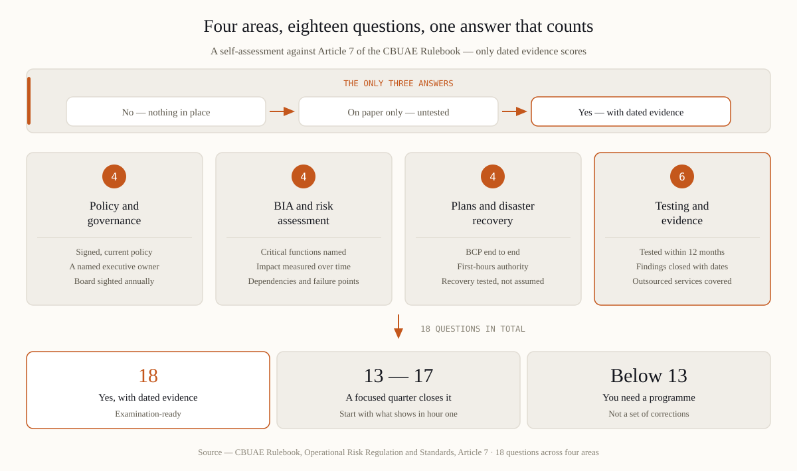

Policy and governance
- Is there a documented BCM policy stating objectives, approach, and the roles with authority to act — signed and current?
- Does a named senior executive own business continuity, with the board sighted on it at least annually?
- Are BCM responsibilities known to the people who hold them — would they answer correctly in an interview?
- Is the scope right-sized to your risk profile, nature, size and complexity — documented reasoning included?
BIA and risk assessment
- Are all critical business functions identified, with disruption impact assessed over time?
- Is the BIA refreshed on an ongoing basis — does its date follow your last material business change?
- Do recovery objectives exist per critical function — and can current arrangements actually meet them?
- Are dependencies mapped: systems, suppliers, premises, key people — with single points of failure named?
Plans and disaster recovery
- Does a documented BCP cover every critical function end to end, meeting the policy's objectives?
- Are first-hours arrangements explicit: who declares, who decides, who communicates — with written authority?
- Do disaster recovery arrangements exist for critical technology, with recovery targets consistent with the BIA?
- Are workarounds defined for the gap between disruption and recovery — tested, not assumed?
Testing and evidence
- Was the BCP tested in the last 12 months — or sooner after material change?
- Did the test produce timings, findings and actions — and are those actions closed with records?
- Can staff execute contingency plans — verified in the test, not asserted?
- Is there an evidence pack an examiner could read in an hour: policy, BIA, BCP, test reports, board minutes?
- Does the board receive resilience reporting with metrics — not a once-a-year slide?
- Are critical outsourced services covered: provider continuity evaluated, exit and workaround options defined?

Scoring guide: 18 «yes with dated evidence» — examination-ready. 13-17 — a focused quarter of work closes it. Below 13 — you need a programme, and starting early still beats the September 2026 queue comfortably.
Frequently asked questions
Is this an official CBUAE checklist?
No — it is a practitioner's checklist built from the Rulebook's Article 7 requirements and regional supervisory practice. The Rulebook text at rulebook.centralbank.ae is the authoritative source.
What does «dated evidence» mean in practice?
Documents an examiner can trust without your narration: a signed policy with a date, BIA outputs with a refresh date, a test report with timings and named findings, board minutes showing resilience on the agenda. Undated or undocumented work does not exist for supervisory purposes.
We outsource our core system. Whose problem is continuity?
Yours. Outsourcing transfers the operation, not the accountability. You need the provider's continuity evaluated against your dependency, contractual recovery commitments, and your own workaround for the gap.